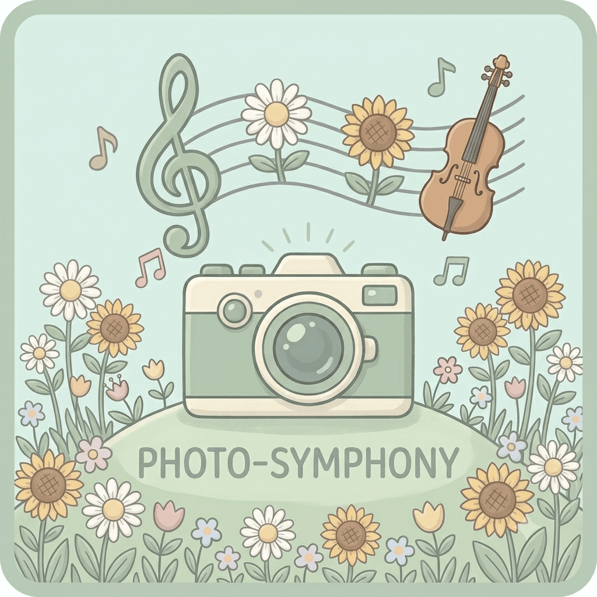
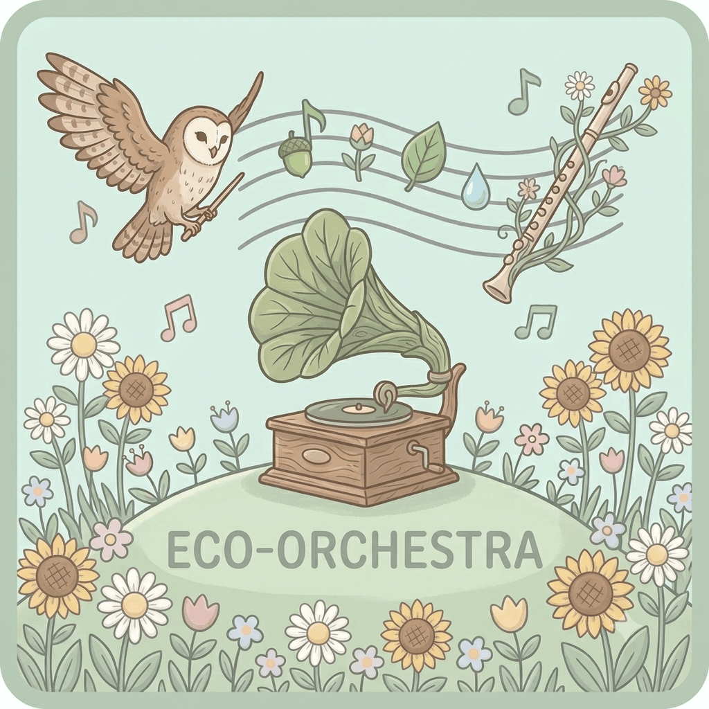
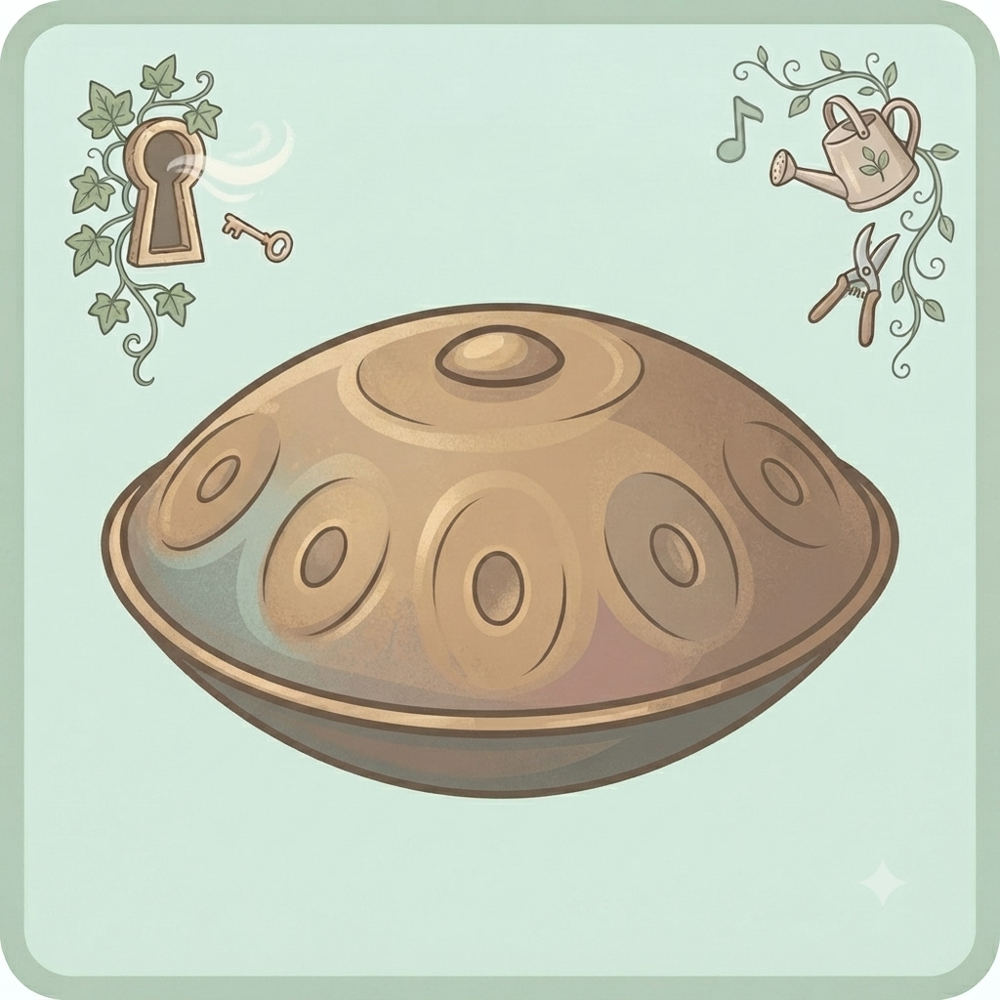

Photo-Symphony
Upload a photo to generate its unique musical vibe.
Unmute your device and get ready for a client-side journey—no user data is collected here. Explore our cosmic canvas through three distinct channels:



Special credits to Gemini for assistance on coding and image creation, and Pixabay for the beautiful audio.